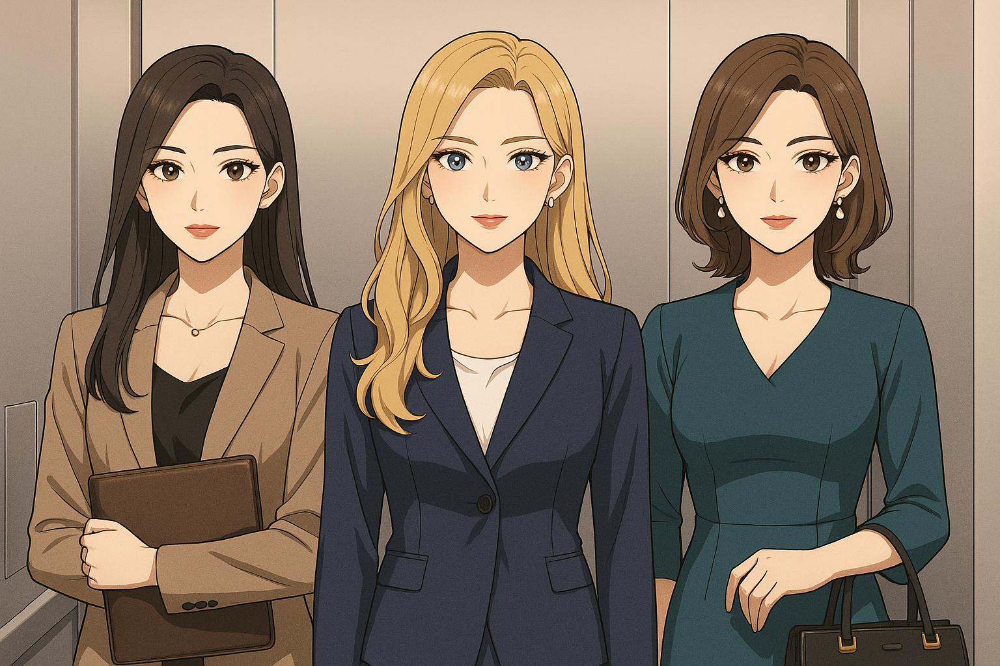

角色设定
公司设定：故事发生在“大海市”著名的滨海科技集团公司内，公司总部一共有666层，所有员工、外包、实习生都在同一栋大楼内办公。肖笑笑原本是某外包公司的基层运维员工，刚刚抽奖中签搬入公司裙楼3层的“阳台海景房”第二天，就被通知被外派至滨海科技集团总部 IT 部门工作。她的办公工位设在最高层——第666层，与行政、运营、财务等正职混合办公，但作为外包员工，她并没有主梯通行权限，只能借货梯上下，日常通勤如同闯关游戏。郑正真是555层软件研发部的正职员工，笑笑第一天坐货梯和他遇见。
👩💻 肖笑笑
- 年龄：26岁
- 身份：外包公司员工，科技公司桌面 IT 运维助理
- 学历：本科毕业三年，计算机信息管理专业
- 特点：粉色长发、表面温顺实则吐槽力爆表、社畜气质浓厚
- 日常任务：装系统、搬笔电、接打印机、回答“为什么我 Wi-Fi 连不上”
- 常见姿态：一手笔电，一手工牌饭盒，蹲在电梯间等货梯
- 口头禅：“我不是 IT 全能，我只是 IT 运维。”
- 梦想：拥有管理员权限，转正后坐上“电梯”

🧑💼 郑正真
- 身份：正职员工，555层软件研发部男同事
- 性格：高冷脸，低情绪，直觉神准但说话直白
- 初次互动：因为等不到电梯，来坐货梯，遇到笑笑
- 常态：经常找笑笑修电脑，还经常训斥笑笑为什么内网经常断
- 隐藏技能：其实对电脑故障非常了解，只是懒得自己动手
- 与笑笑关系：外表嫌弃，实则习惯性依赖
📦 女同事团（集体设定）
- 身份：正职行政、运营、财务混合体，俗称“电梯守门员”
- 特点：站在电梯正中央，神情冷酷，嘴角带笑但从不说话
- 特点2：她们只说一句话：“你不是正职吧？”
- 外号：“电梯三姐妹”、“HR快反队”
